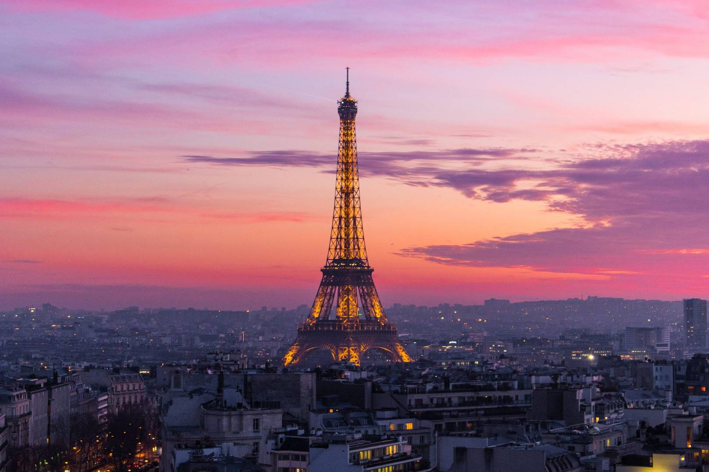
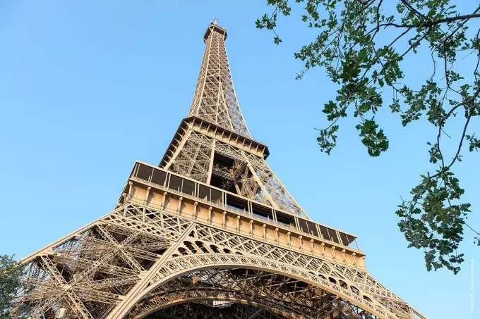
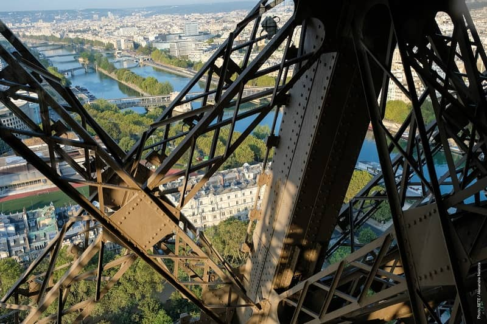

Descripción
La Torre Eiffel es una torre de hierro pudelado de 330 metros de altura construida por Gustave Eiffel para la Exposición Universal de 1889 en París. Inicialmente criticada por los artistas parisinos, se ha convertido en el monumento más emblemático de Francia y una de las estructuras más reconocibles del mundo.
Ofrece vistas panorámicas incomparables de París desde sus tres niveles. El símbolo más icónico de Francia y uno de los monumentos más visitados del mundo.
Información rápida
Por qué vale la pena
Vistas panorámicas únicas
Desde la cima puedes ver todo París: el Arco del Triunfo, Montmartre, el Sena y mucho más. Es especialmente mágico al atardecer.
Experiencia icónica imprescindible
Es el símbolo de París. Aunque sea muy turístico, la experiencia de estar allí es única y vale completamente la pena.
Perfecta para fotos memorables
Uno de los monumentos más fotogénicos del mundo. Tanto desde abajo como las vistas desde arriba son increíbles.
Ambiente nocturno espectacular
El espectáculo de luces cada hora en punto durante la noche es mágico. Ver París iluminado desde la torre es inolvidable.